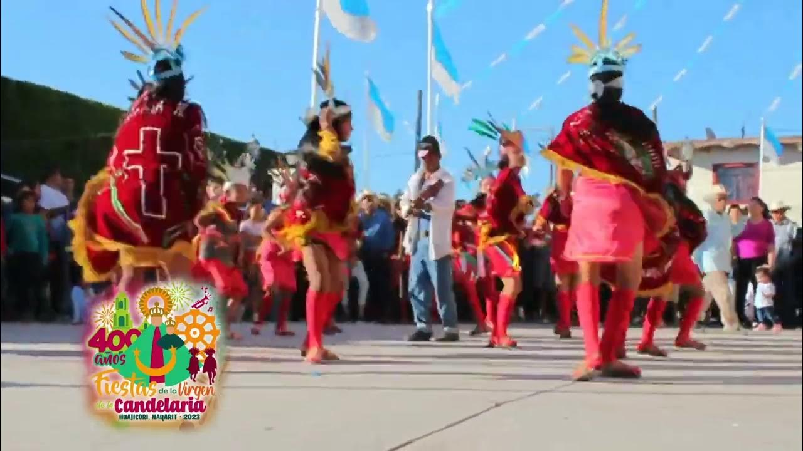
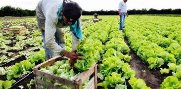

UBICACIÓN: Huajicori está situado en el extremo norte del estado de Nayarit, México, dentro de la región serrana de la Sierra Madre Occidental. Su altitud varía entre los 100 y 2100 metros sobre el nivel del mar, lo que le otorga paisajes variados y hermosos.
HISTORIA: Fundado en 1917, Huajicori tiene un legado cultural que se remonta a los pueblos originarios, como los nahuatlacas y totorames. En la región se han encontrado figuras labradas en piedra que datan de entre los años 700 y 900 d.C., las cuales representan eventos relacionados con la cosmogonía de los antiguos habitantes.
FIESTAS: Entre las festividades más destacadas se encuentra el Festival de Día de Muertos, que combina danza, música y gastronomía para celebrar las tradiciones mexicanas. Además, se realizan eventos religiosos y culturales durante todo el año, reflejando la riqueza de sus costumbres.
PRODUCCIÓN: La economía de Huajicori se basa principalmente en la agricultura, destacando cultivos como maíz, frijol, jamaica y árboles frutales. Además, cuenta con recursos minerales como plomo, oro y plata, aunque su explotación es limitada.
